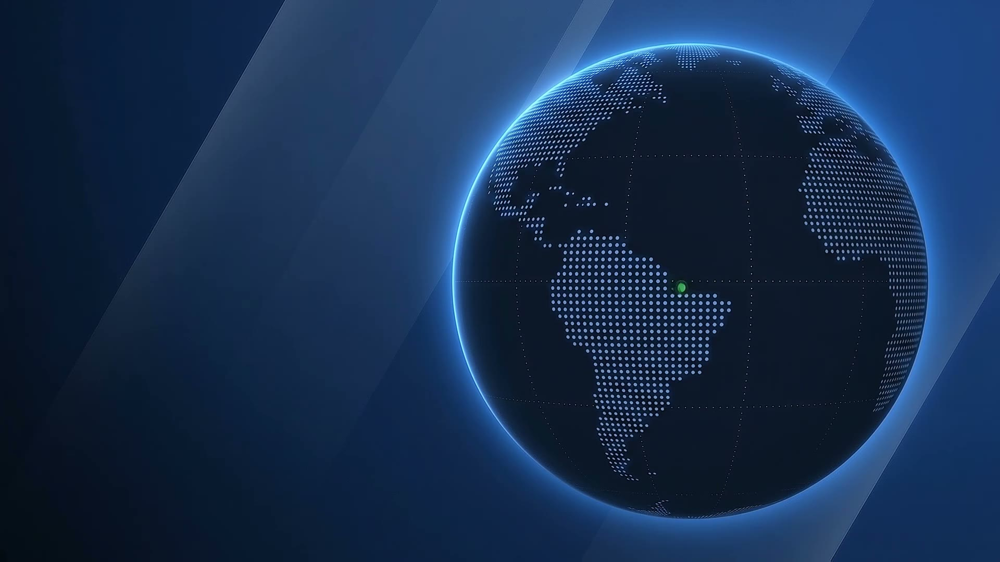
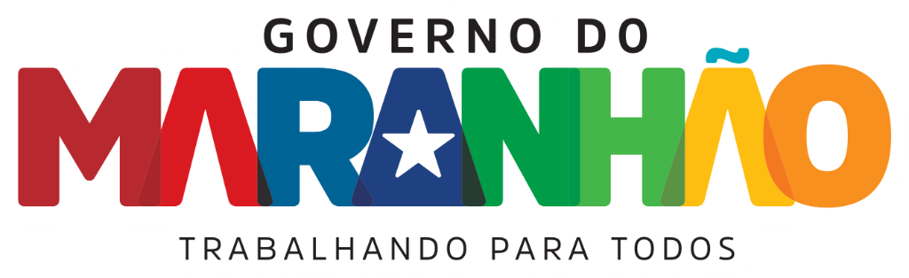
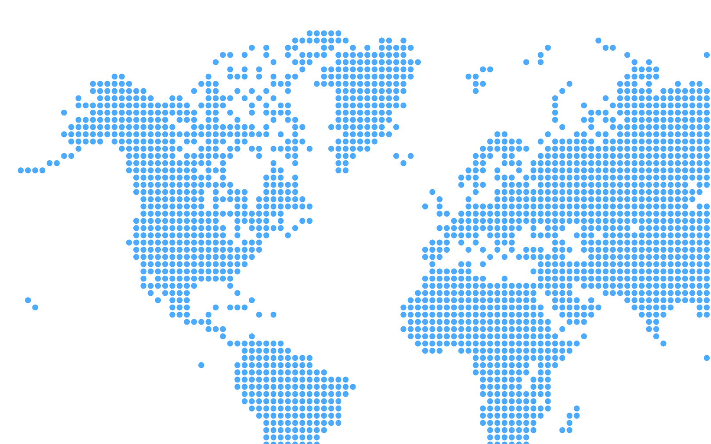
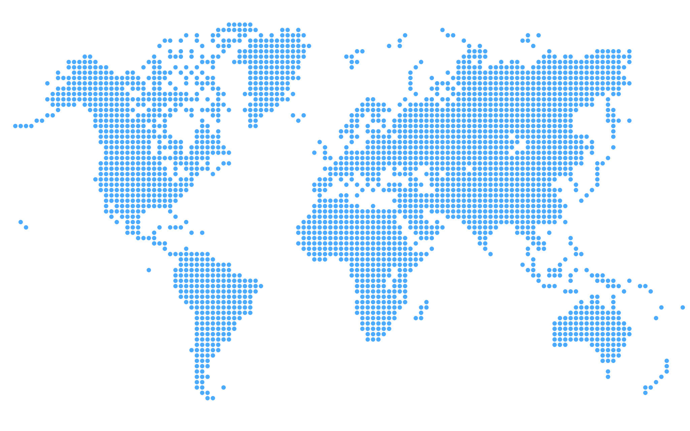

Zona de Processamento de Exportação do Maranhão



Roteiro

Capítulo 01 · O regime
Uma Zona de Processamento de Exportação é uma área do território brasileiro que opera sob regras próprias, garantidas por lei federal.
Não é uma zona franca de comércio: o foco é a indústria e os serviços voltados para a exportação.
Liberdade cambial
Permite manter no exterior 100% das divisas obtidas com a exportação.
Segurança jurídica
Benefícios garantidos por lei federal, estáveis por 20 anos e prorrogáveis por igual período.
Lei nº 11.508/2007 · Lei nº 14.184/2021 · Supervisão do CZPE, vinculado ao MDIC
O que a ZPE elimina
Os cinco tributos que encarecem a importação convencional:
AtéUS$ 6mi
de economia tributária por ano para operações que importam US$ 15 milhões em insumos e equipamentos. Estudo Tributário Comparado da CZPE · 11.760 simulações · 20 estados · 147 mercadorias
ICMS isento pelo Convênio ICMS 99/1998. Com a reforma tributária (Lei Complementar nº 214/2025), PIS e Cofins passam ao novo modelo de tributação do consumo.
Capítulo 01 · A ZPE Maranhão
Área
2.098,83 ha
No município de Bacabeira, Região Metropolitana de São Luís.
Acessos
BR-135 · BR-402
Estrada de Ferro Carajás e Porto do Itaqui.
Administração
Companhia Administradora da ZPE-MA
Sociedade de economia mista, subsidiária da Investe Maranhão, Agência de Desenvolvimento do Estado do Maranhão S.A.
Presidência
Rakel Dourado Murad
Preside a companhia desde outubro de 2025.
Trajetória
Capítulo 01 · Situação no CZPE
CZPE: Conselho Nacional das Zonas de Processamento de Exportação
Investimentos previstos
R$31,2bi
Soma dos quatro projetos industriais aprovados pelo CZPE para a ZPE de Bacabeira.
4
Projetos
aprovados
3
Aprovados na reunião
de 25 de agosto de 2026
Aprovado na reunião de 25 de agosto de 2026.
Aprovado em outubro de 2024; instalação autorizada em março de 2025.
Aprovado na reunião de 25 de agosto de 2026.
Aprovado na reunião de 25 de agosto de 2026.
Capítulo 01 · Projetos em oito frentes
12
projetos recebidos na ZPE MA
5
projetos aprovados na ZPE MA
4
projetos aprovados no CZPE
Oil Group · 4Wood Biotech · H2X · Hydeas
1 projeto submetido
para análise no CZPE
Florestas Brasileiras
7
projetos em análise na ZPE MA
Frentes da carteira
Capítulo 02 · Corpo técnico · 1 de 2
Presidência
Rakel Dourado Murad
Diretor Geral – Presidente
Advogada, mestre em Direito Administrativo e Constitucional, especialista em Administração de Empresas
Liana Baker
Assessor Técnico I
Advogada
Shayene Lopes
Assessor Técnico I
Engenheira Ambiental
Jean Carlos Amorim
Motorista
Engenharia e Tecnologia da Informação
Willinton Burak
Diretor de Engenharia
Engenheiro Civil, especialista em Lean Construction, em Gestão de Projetos na Construção Civil e em Engenharia Rodoviária; técnico em Eletromecânica
Gustavo Figueiredo
Engenheiro – Nível 3
Engenheiro Eletricista, mestre em Energia e Ambiente
Roniele Aquino
Assessor Técnico II
Engenheira Civil
Larissa Borçoi
Assessor Técnico I
Engenheira Ambiental, especialista em Gerenciamento de Projetos
Operações e Segurança Patrimonial
Rubem Teixeira
Assessor Técnico II
Bacharel em Direito, especialista em Segurança Pública
Jesse Araújo
Analista II
Advogado, especialista em Segurança Pública
Capítulo 02 · Corpo técnico · 2 de 2
Comercial e Marketing
Eduardo Neves
Diretor Comercial
Economista
Frederico Brandt
Assessor Técnico I
Engenheiro Eletricista, especialista em Marketing Estratégico, com formação em IA e Transformação Digital aplicadas à Gestão Pública
Wagner Alves
Assessor Técnico III
Economista e Administrador
Ruth Feitosa
Técnica Especializada
Comunicação Social – Publicidade e Propaganda
Administrativo, Financeiro e RI
Lisley Amorim
Diretor Administrativo Financeiro
Contadora, especialista em Finanças Corporativas e Controladoria
Ana Cláudia Corrêa
Jurídico
Cristiano Duailibe
Assessor Técnico I
Advogado
Pablo Cassas
Assessor Jurídico
Advogado
Victor Vidigal
Assessor de Compliance
Advogado
Alina Xavier
Coordenadora de Contratos
Contadora
Capítulo 03
Atuação nas frentes de análise técnica dos projetos industriais, planejamento da infraestrutura e licenciamento ambiental da ZPE.
Capítulo 03 · Engenharia
Análise de projetos industriais
Pareceres técnicos de projetos
Estudos de energia
Planejamento e estudos
Capítulo 03 · Meio ambiente
Atuação nas frentes de licenciamento ambiental, due diligence, programas ambientais, condicionantes, anuência do IPHAN e alfandegamento.
Capítulo 03 · Meio ambiente
Licenciamento ambiental
Licença Prévia
Obtida
Licença de Instalação
Obtida
Anuência do IPHAN
Obtida
Capítulo 04
Garantiu o controle físico da área da ZPE em Bacabeira, condição para receber obras e investidores.
Capítulo 04 · Operações e segurança patrimonial
01 · Segurança
Segurança da área
Controle de possíveis invasões e redução de ocupações irregulares.
02 · Segurança Contínuo
Acordo com a PM de Rosário
Rondas educativas que reduziram o trânsito de pessoas na área.
03 · Segurança
Novo posto de vigilância
Estrutura reformada e em local estratégico para a equipe de vigilância.
04 · Segurança
Iluminação
Visibilidade noturna de toda a área administrativa, antes sem iluminação.
05 · Obras e visitas
Reforma predial
Acompanhamento da melhoria dos prédios existentes e da pavimentação no entorno.
06 · Obras e visitas
Visitas de investidores
Acompanhamento in loco, com retorno positivo dos investidores sobre a visita.
07 · Entorno Em andamento
Matriz de stakeholders
Mapeamento dos entes envolvidos na instalação da ZPE, com classificação e grau de influência.
08 · Entorno Contínuo
Rotina com o entorno
Rondas e ações educativas para evitar roças, desmatamento, carvoarias, criação de animais e tráfego de veículos na área.
Capítulo 05
Respondeu pela atração de investimentos e pela imagem institucional da ZPE.
Capítulo 05 · Comercial
Pareceres e cartas aos proponentes
Do encaminhamento à aprovação
Documentação de 4Wood, H2X e Hydeas organizada e encaminhada ao CZPE. Os três foram aprovados em 25 de agosto de 2026.
Portfólio e CZPE
Capítulo 05 · Comercial
Bases econômicas da operação
Planejamento
Agenda de prospecção e relacionamento
Eventos e fóruns
Visitas a empresas
Negócios e relacionamento
Capítulo 05 · Comercial
Investimentos privados totais
R$32,855bi
Soma dos projetos da carteira da ZPE Maranhão.
12
Projetos
no total
876,02 ha
Área total prevista
8.760.200 m²
13.986 diretos e 19.753 indiretos.
12.273 diretos e 13.273 indiretos.
1.713 diretos e 6.480 indiretos.
Capítulo 05 · Marketing
4idiomas
Apresentação institucional, com 26 telas e 328 textos
30páginas
Conteúdo do book institucional
33publicações
De feed, entre carrosséis, imagens e vídeos
49convidados
Na visita técnica do CZPE, com 7 subeventos
27páginas
Dossiê da Presidência para o Maranhão Day
Plataformas e materiais
Eventos e Presidência
Redes e rotinas
Rotinas contínuas
Capítulo 06
A Diretoria Administrativa, Financeira e de Relacionamento com Investidores manteve a ZPE regular perante os órgãos de controle e assegurou o funcionamento administrativo da companhia.
Capítulo 06 · Administrativo e financeiro
74
Processos de pagamento
Instruídos no período.
22
Processos de diárias
Instruídos no período.
Contabilidade e obrigações acessórias de 2025
Gestão administrativa
Atas autenticadas na JUCEMA
Capítulo 07
Estruturou a base normativa da companhia e deu segurança jurídica às decisões da ZPE.
Capítulo 07 · Pareceres
Projetos industriais
Temas estratégicos
Societário e governança
Infraestrutura e território
Contratações e institucional
Capítulo 07 · Base normativa e interlocução
Base normativa e transparência
Ofícios e notificações
Contratações e pessoas
Termos de Referência revisados
Gestão de pessoas
Acordos
Capítulo 08
Coordenou a agenda institucional da ZPE Maranhão e fez a ponte entre a Presidência, as diretorias e os parceiros externos.
Capítulo 08 · Assessoria da Presidência
Agenda e representação institucional
Governança e articulação
Relacionamento e expediente
Síntese do período
12
Projetos recebidos na ZPE MA
5
Projetos aprovados na ZPE MA
4
Aprovados no CZPE e 1 submetido para análise
7
Projetos em análise na ZPE MA
R$31,2bi
Investimentos dos projetos aprovados no CZPE
LP e LI
Licenças obtidas, além da anuência do IPHAN
Obrigado.
Índice da apresentação